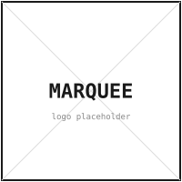

Marquee · open source
Marquee is an open-source emulator that asks, before you cut metal, can this part be made — and if so, how? Its first concrete instantiation is Open Lathe: a community-driven project scoped to lathe machining, built openly on both fronts — the emulator software, and the lathe itself.
01 · The problem
In chip design, logic is emulated long before silicon is fabricated. Errors surface in software, not in a fab run. That single move — emulation upstream of manufacturing — compresses the iteration cycle from months to minutes, which is most of the reason a designer can try a hundred ideas a week.
Mechanical design has no equivalent layer. To learn whether a part is manufacturable, you usually build it. Prototypes take weeks; failures are discovered late; teams default to something that works well enough rather than exploring something genuinely new. As one of the project's drafts puts it:
It is generally harder to think of something completely new when it is hard to make a new version of something that is already used.
The chip-design analogy isn't perfect — bits aren't atoms, and machining isn't lithography. But the structural gap is real: somewhere upstream of CAM, between I have a shape and I have a process plan, there should be a fast, honest answer about what's actually buildable.
02 · The vision
Marquee is the open-source layer that fills that gap. Given a target geometry and a description of available machines and tools, it produces a manufacturability verdict and, when feasible, a proposed process sequence. It is not a replacement for CAM — it is a feasibility gate upstream of CAM, where iteration is cheap.
The platform is built so its value compounds with contribution. Each new machine model, tool definition, material profile, or process rule that the community adds widens the set of designs Marquee can reason about. Mechanical design becomes more like software: composable, inspectable, shareable.
03 · First instantiation
Open Lathe is the first concrete instantiation of Marquee, scoped to lathe machining. It is community-driven on two fronts at once:
The end goal is back-to-back design between the two: a physical machine whose envelope is precisely understood by an agentic system that performs manufacturability analysis and supports part design. The same primitives that describe what the lathe can do are the primitives a designer queries when sketching a part.
04 · Where I am now
The first milestone targets a single idealized lathe with three turning-tool archetypes —
shaping/sculpting, detail/fillet, and parting/cutoff — grounded in
ISO 1832:2017 turning insert nomenclature, with axisymmetric STEP geometry as input
and a manufacturability verdict plus process sequence as output.
Geometric scope only. Material properties, cutting forces, surface finish, and tolerances are explicitly out of this version — they are roadmap items, not silent omissions.
Honest status, today.
What's built is a geometric kernel and the primitives the rest will sit on:
Segment, Shape, and Path classes; line/arc intersection; closed-region
construction with self-intersection checks; boolean material removal; and a TurningInsert model
that splits an insert's footprint into a green (cutting) zone and a red (collision) zone for a given lead angle.
Two standard inserts (CNMG 120408 and VBMT 160404) are modeled.
What's not yet built — and what the first milestone is aimed at — is the STEP loader, the three-tool archetype dataset, the manufacturability verdict, the process-sequence generator, and the agentic system trained on a synthesized dataset of manufacturable shapes. The architecture for that last piece is open.
05 · Roadmap
The milestones below are ordered by where they sit in the dependency graph, not by promised dates. Each one is a place where the project welcomes contribution.
06 · Get involved
The project is early. There is a lot more value in shaping the questions than in shipping code, and three channels exist depending on how concrete your input is.
For open-ended questions, ideas, prior art, and pushback. Start here.
Open Discussions →For specific proposals and reproducible bugs. Use the templates — they're short.
Open Issues →For sustained conversation with the maintainer and core contributors. Joining soon — link will land here.
Joining soon